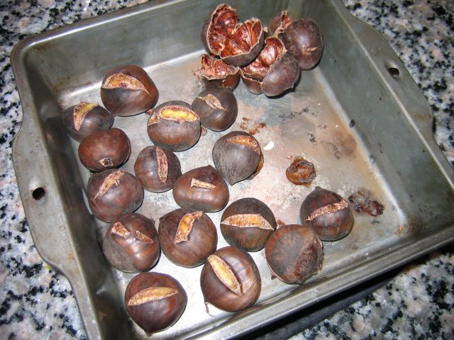
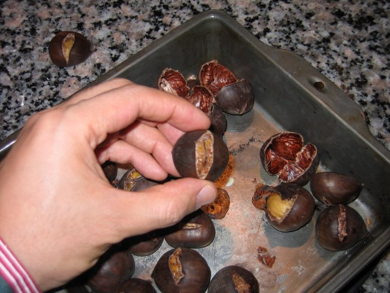
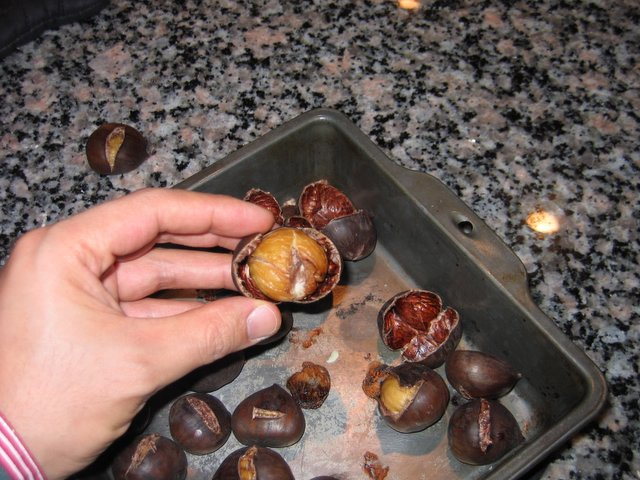
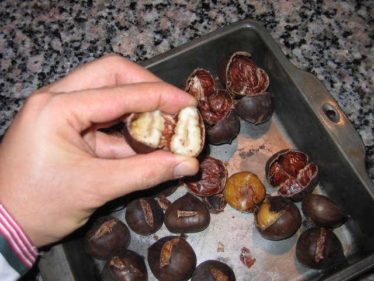
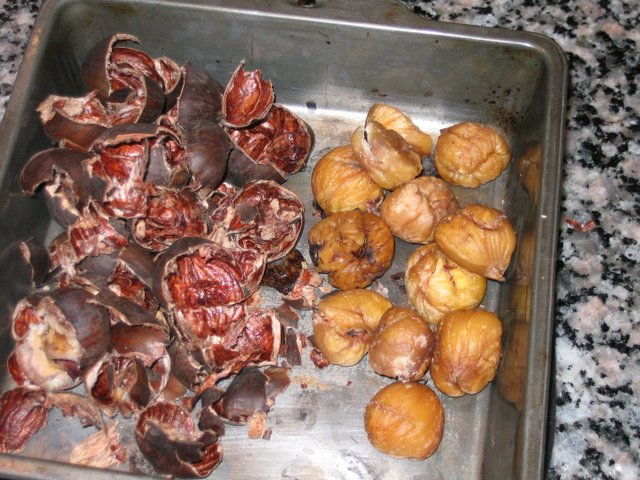

My Recipe for Cooking Chestnuts
Introduction: I love
chestnuts. I enjoy the holidays because that's when chestnuts are
available. I've been working on a method for cooking them for
over 15 years now and this last year they came out the best and most
consistent -- so here's how I do it.
- I buy my chestnuts from the grocery store. They are
available around Thanksgiving (a few days later) through Christmas and
they become rare into the new year. So, if you like them, buy
them and buy them often before they disappear. Note that the
first ones to come out (early in the season) are ok; they get better
through the season; and the last ones to be had are only ok to
moldy. When you buy them, make sure they look somewhat shiny and
not with holes in them. If you see any with black holes, avoid
them.
- Go through each chestnut (I only count 20 of them for myself -- I
can only comfortably eat this many) and cut a line across it. The
following pictures will show where the line is. Many recipes call
for making an "X". After using the "X" for years, I tried the
single line and this is the best for peeling. Make the line cut
well because this is the most important part. If you don't
make the line well, it will be difficult to peel the chestnut (and it
is well known that peeling the chestnut is one of the toughest parts of
preparing them for eating). I like to place each chestnut on a
folded towel so that the nut does not slip when I cut it. I will
wear a thick cooking glove on the hand that is not holding the knife --
just in case I slip and the knife goes astray.
- As I make my line cut, I will place each chestnut into a small
pan. After all chestnuts are cut, I wash them with cool water to
get any dust off of them (mostly for presentation and if you want to
use your teeth to open them). I then fill the pan with hot water
so that the highest chestnut is almost covered in water. I use
hot water to speed the boiling process. I boil the chestnuts for
about 13 minutes.
- During boiling, I preheat my oven to 425deg F. My oven is
electric and takes about 12 minutes to preheat to 425deg F.
- Once the 13 minutes have elapsed, I drain the water from the
chestnuts (the water is kind of brown) and rinse the chestnuts and
drain the water. I then place the chestnuts onto a baking pan and
place them in preheated oven (at 425deg F) for 23 minutes.
- After 23 minutes, remove pan of chestnuts from the oven and let
cool for about 5 or so minutes. Then start peeling.
- Peeling is best done while the chestnuts are still hot -- yes
hot! I will sometimes use a cooking glove on one hand to
peel. I have waited about 30 minutes for them to cool (only by
accident) but as they cool, they get a little harder to peel.
- Peeling is done by squeezing either end of the horizontal line
you cut earlier so that the skin naturally separates from the
nut. Once you see a gap, get your finger(nail) in there and work
the skin away -- patiently! It takes practice. If the nut
doesn't separate, that's ok -- I still get one of two that do that (it
is unavoidable). At this point, you can only gouge out the nut
with your teeth of a tool.
Below, you can see how I made the line cut. It goes roughly from
one side to the other. In the corner, you can see some skin from
when I peeled a few chestnuts. Note most of the skin in intact
and also, the nut itself fully intact.

Here's me squeezing where I need to -- on either side of the cut.
Applying pressure here ensures the skin will naturally separate from
the nut.

Note that the nut is perfectly separated and skin ready to be removed
with the nut fully intact.

Note the space between the nut and the skin; that's where you insert
your finger/fingernail to separate the skin.

Ah! chestnut eater's Nirvana -- most of the nuts separated and ready to
eat (as easily as eating popcorn). Note some of the black
spots. I will cut these away with a knife or just eat around
them. The black spots are very bitter -- do not eat (yuck).
